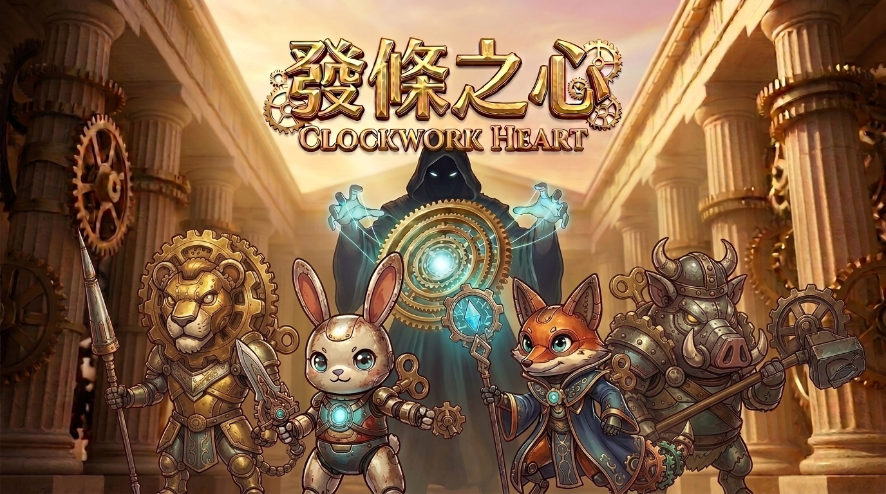

02 · 魂
星讀 · 抽魂／聚魂
封靈罐（綠階→藍階→紫階→橙階）。抽魂入魂；神品質＝神魂——不是另一套系統。每天免費 1 次，可抽×10；抽魂積虔誠，滿百得碎片、碎片凝魂。廢魂一鍵吸收餵養，最高 10 級。嵌槽前會顯示攻防血增減。

鐵匠養器 · 抽魂養魂 · 旅途養招。四店都能走進去。戰鬥是即時的，不是回合制。
Philosophy
很多 RPG 逼你專精一條。這裡故意把「手感」與「成長」拆開——六職各有兩套對等武器（非主副）；選弓或火槍只換遊俠線的站位與招，戰魂與鍛造永遠可調。
Village
原作村莊店舖。不是選單裡四顆按鈕。
野外薄經驗，演武較厚。好友挑戰打殘影，不是即時對戰。飾品六槽 Lv15 開放。

互不綁定例：選弓（遊俠遠距）＋暴擊向戰魂＋鍛造升階＋招式熟練。之後改火槍（同職另一套），戰魂可拆到新武器——養成不會整組作廢。